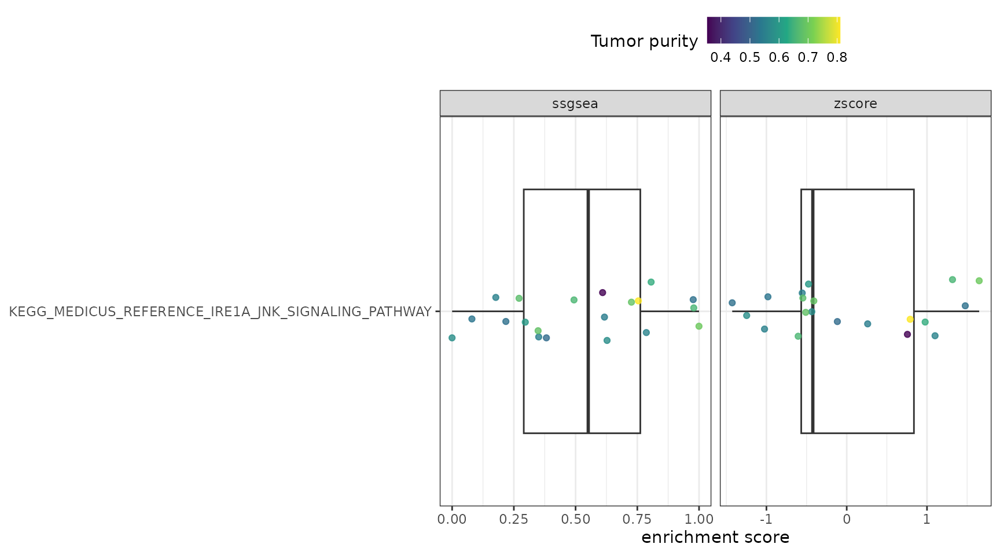

Hacksig is a collection of cancer transcriptomics gene signatures and it provides a simple and tidy interface to compute single sample enrichment scores.
This document will show you how to getting started with hacksig, but first, we must load the following packages:
library(hacksig)
# to plot and transform data
library(dplyr)
library(ggplot2)
library(purrr)
library(tibble)
library(tidyr)
# to get the MSigDB gene signatures
library(msigdbr)
# to parallelize computations
library(future)
theme_set(theme_bw())Available signatures from the literature
In order to get a complete list of the implemented signatures, you
can use get_sig_info(). It returns a tibble with very
useful information:
- the
signature_id; - a string of keywords associated to a signature (separated by the
“pipe”
|symbol); - the
publication_doilinking to the original publication; - a brief
description.
get_sig_info()
#> # A tibble: 40 × 4
#> signature_id signature_keywords publi…¹ descr…²
#> <chr> <chr> <chr> <chr>
#> 1 ayers2017_immexp ayers2017_immexp|immune expanded 10.117… Immune…
#> 2 bai2019_immune bai2019_immune|head and neck squamous cell… 10.115… Immune…
#> 3 cinsarc cinsarc|metastasis|sarcoma|sts 10.103… Biomar…
#> 4 dececco2014_int172 dececco2014_int172|head and neck squamous … 10.109… Signat…
#> 5 eschrich2009_rsi eschrich2009_rsi|radioresistance|radiosens… 10.101… Genes …
#> # … with 35 more rows, and abbreviated variable names ¹publication_doi,
#> # ²descriptionIf you want to get the list of gene symbols for one or more of the
implemented signatures, then use get_sig_genes() with valid
keywords:
get_sig_genes("ifng")
#> $muro2016_ifng
#> [1] "CXCL10" "CXCL9" "HLA-DRA" "IDO1" "IFNG" "STAT1"Check your signatures
The first thing you should do before computing scores for a signature
is to check how many of its genes are present in your data. To
accomplish this, we can use check_sig() on a normalized
gene expression matrix (either microarray or RNA-seq normalized data),
which must be formatted as an object of class matrix or
data.frame with gene symbols as row names and sample IDs as
column names.
For this tutorial, we will use test_expr (an R object
included in hacksig) as an example gene expression matrix with 20
simulated samples.
By default, check_sig() will compute statistics for
every signature implemented in hacksig.
check_sig(test_expr)
#> # A tibble: 40 × 5
#> signature_id n_genes n_present frac_present missing_genes
#> <chr> <int> <int> <dbl> <list>
#> 1 wu2020_metabolic 30 20 0.667 <chr [10]>
#> 2 muro2016_ifng 6 4 0.667 <chr [2]>
#> 3 liu2020_immune 6 4 0.667 <chr [2]>
#> 4 liu2021_mgs 6 4 0.667 <chr [2]>
#> 5 lu2020_npc 3 2 0.667 <chr [1]>
#> # … with 35 more rowsYou can filter for specific signatures by entering keywords in the
signatures argument (partial matching and regular
expressions will work too):
check_sig(test_expr, signatures = c("metab", "cinsarc"))
#> # A tibble: 2 × 5
#> signature_id n_genes n_present frac_present missing_genes
#> <chr> <int> <int> <dbl> <list>
#> 1 wu2020_metabolic 30 20 0.667 <chr [10]>
#> 2 cinsarc 67 40 0.597 <chr [27]>We can also check for signatures not implemented in hacksig, that is
custom signatures. For example, we can use the msigdbr
package to download the Hallmark gene set collection as a
tibble and transform it into a list:
hallmark_list <- msigdbr(species = "Homo sapiens", category = "H") %>%
distinct(gs_name, gene_symbol) %>%
nest(genes = c(gene_symbol)) %>%
mutate(genes = map(genes, compose(as_vector, unname))) %>%
deframe()
check_sig(test_expr, hallmark_list)
#> # A tibble: 50 × 5
#> signature_id n_genes n_present frac_present missing_g…¹
#> <chr> <int> <int> <dbl> <list>
#> 1 HALLMARK_WNT_BETA_CATENIN_SIGNALING 42 27 0.643 <chr [15]>
#> 2 HALLMARK_APICAL_SURFACE 44 28 0.636 <chr [16]>
#> 3 HALLMARK_BILE_ACID_METABOLISM 112 70 0.625 <chr [42]>
#> 4 HALLMARK_NOTCH_SIGNALING 32 20 0.625 <chr [12]>
#> 5 HALLMARK_PI3K_AKT_MTOR_SIGNALING 105 65 0.619 <chr [40]>
#> # … with 45 more rows, and abbreviated variable name ¹missing_genesMissing genes for the HALLMARK_NOTCH_SIGNALING gene set
are:
Compute single sample scores
hack_sig
The main function of the package, hack_sig(), permits to
obtain single sample scores from gene signatures. By default, it will
compute scores for all the signatures implemented in the package with
the original publication method.
hack_sig(test_expr)
#> Warning: ℹ No genes are present in 'expr_data' for the following signatures:
#> ✖ zhu2021_ferroptosis
#> ✖ rooney2015_cyt
#> ℹ To obtain CINSARC, ESTIMATE and Immunophenoscore with the original procedures, see:
#> ?hack_cinsarc
#> ?hack_estimate
#> ?hack_immunophenoscore
#> # A tibble: 20 × 32
#> sample_id ayers2017_…¹ bai20…² decec…³ eschr…⁴ eusta…⁵ fan20…⁶ fang2…⁷ han20…⁸
#> <chr> <dbl> <dbl> <dbl> <dbl> <dbl> <dbl> <dbl> <dbl>
#> 1 sample1 5.71 -22.3 2.62 0.0289 8.1 -2.67 2.96 -0.503
#> 2 sample10 6.96 -23.0 2.69 0.415 8.17 -0.743 3.42 -0.259
#> 3 sample11 8.06 -19.9 1.73 0.542 7.79 -5.25 4.01 -0.454
#> 4 sample12 8.57 -23.8 2.35 0.287 8.45 -2.96 8.45 -0.450
#> 5 sample13 6.35 -25.9 2.36 0.583 8.22 -4.52 1.97 -0.317
#> # … with 15 more rows, 23 more variables: he2021_ferroptosis_a <dbl>,
#> # he2021_ferroptosis_b <dbl>, hu2021_derbp <dbl>,
#> # huang2022_ferroptosis <dbl>, li2021_ferroptosis_a <dbl>,
#> # li2021_ferroptosis_b <dbl>, li2021_ferroptosis_c <dbl>,
#> # li2021_ferroptosis_d <dbl>, li2021_irgs <dbl>, liu2020_immune <dbl>,
#> # liu2021_mgs <dbl>, lohavanichbutr2013_hpvneg <dbl>, lu2020_npc <dbl>,
#> # lu2021_ferroptosis <dbl>, muro2016_ifng <dbl>, qiang2021_irgs <dbl>, …You can also filter for specific signatures (e.g. the immune and stromal ESTIMATE signatures) and choose a particular single sample method:
hack_sig(test_expr, signatures = "estimate", method = "zscore")
#> # A tibble: 20 × 3
#> sample_id estimate_immune estimate_stromal
#> <chr> <dbl> <dbl>
#> 1 sample1 -2.65 -0.262
#> 2 sample10 1.37 0.305
#> 3 sample11 1.50 -0.959
#> 4 sample12 1.65 -1.22
#> 5 sample13 -0.535 -0.743
#> # … with 15 more rowsValid choices for single sample methods are:
-
"zscore", for the combined z-score; -
"ssgsea", for the single sample GSEA; -
"singscore", for the singscore method.
Run ?hack_sig to see additional parameter specifications
for these methods.
As in check_sig(), the argument signatures
can also be a list of gene signatures. For example, we can compute
normalized single sample GSEA scores for the Hallmark gene sets:
hack_sig(test_expr, hallmark_list,
method = "ssgsea", sample_norm = "separate", alpha = 0.5)
#> # A tibble: 20 × 51
#> sample_id HALLMARK_A…¹ HALLM…² HALLM…³ HALLM…⁴ HALLM…⁵ HALLM…⁶ HALLM…⁷ HALLM…⁸
#> <chr> <dbl> <dbl> <dbl> <dbl> <dbl> <dbl> <dbl> <dbl>
#> 1 sample1 0.683 0.419 0.943 0.447 0.137 0.0529 0.484 0.454
#> 2 sample10 0.384 0.790 0.300 0.287 0.373 0.290 0.175 0.482
#> 3 sample11 0.249 0.756 0.646 1 0.490 0 0.377 0.676
#> 4 sample12 0.998 1 0.959 0.111 1 0.380 0.452 0.515
#> 5 sample13 0.785 0 0.373 0.607 0.398 0.309 0.217 0.274
#> # … with 15 more rows, 42 more variables:
#> # HALLMARK_CHOLESTEROL_HOMEOSTASIS <dbl>, HALLMARK_COAGULATION <dbl>,
#> # HALLMARK_COMPLEMENT <dbl>, HALLMARK_DNA_REPAIR <dbl>,
#> # HALLMARK_E2F_TARGETS <dbl>,
#> # HALLMARK_EPITHELIAL_MESENCHYMAL_TRANSITION <dbl>,
#> # HALLMARK_ESTROGEN_RESPONSE_EARLY <dbl>,
#> # HALLMARK_ESTROGEN_RESPONSE_LATE <dbl>, …There are three methods for which hack_sig() cannot be
used to compute gene signature scores with the original method. These
are: CINSARC, ESTIMATE and the Immunophenoscore.
hack_cinsarc
For the CINSARC classification, you must provide a vector with distant metastasis status:
set.seed(123)
rand_dm <- sample(c(0, 1), size = ncol(test_expr), replace = TRUE)
hack_cinsarc(test_expr, rand_dm)
#> # A tibble: 20 × 2
#> sample_id cinsarc_class
#> <chr> <chr>
#> 1 sample1 C2
#> 2 sample2 C1
#> 3 sample3 C2
#> 4 sample4 C1
#> 5 sample5 C2
#> # … with 15 more rowshack_estimate
Immune, stromal, ESTIMATE and tumor purity scores from the ESTIMATE method can be obtained with:
hack_estimate(test_expr)
#> # A tibble: 20 × 5
#> sample_id immune_score stroma_score estimate_score purity_score
#> <chr> <dbl> <dbl> <dbl> <dbl>
#> 1 sample1 -636. 778. 142. 0.811
#> 2 sample10 1590. 1297. 2887. 0.516
#> 3 sample11 2040. 512. 2552. 0.557
#> 4 sample12 1835. 772. 2607. 0.551
#> 5 sample13 632. 778. 1409. 0.688
#> # … with 15 more rowshack_immunophenoscore
Finally, the raw immunophenoscore and its discrete (0-10 normalized) counterpart can be obtained with:
hack_immunophenoscore(test_expr)
#> # A tibble: 20 × 3
#> sample_id raw_score ips_score
#> <fct> <dbl> <dbl>
#> 1 sample1 0.942 3
#> 2 sample2 -0.348 0
#> 3 sample3 0.0939 0
#> 4 sample4 -0.335 0
#> 5 sample5 1.64 5
#> # … with 15 more rowsYou can also obtain all biomarker scores with:
hack_immunophenoscore(test_expr, extract = "all")
#> # A tibble: 20 × 19
#> sample_id act_cd4_sc…¹ act_c…² b2m_s…³ cd27_…⁴ icos_…⁵ mdsc_…⁶ pd1_s…⁷ pdl2_…⁸
#> <fct> <dbl> <dbl> <dbl> <dbl> <dbl> <dbl> <dbl> <dbl>
#> 1 sample1 0.0793 -0.335 0.312 -0.868 -0.768 0.652 1.66 -0.674
#> 2 sample2 -0.0165 -0.308 -0.796 0.195 0.909 -0.273 -1.71 0.304
#> 3 sample3 0.539 0.0393 -0.483 0.525 -0.457 0.150 1.38 1.18
#> 4 sample4 0.398 0.383 -0.777 0.699 0.658 0.130 0.101 -0.168
#> 5 sample5 -0.0496 0.137 0.876 0.373 0.251 0.0413 2.70 -0.113
#> # … with 15 more rows, 10 more variables: tem_cd4_score <dbl>,
#> # tem_cd8_score <dbl>, tigit_score <dbl>, treg_score <dbl>, raw_score <dbl>,
#> # ips_score <dbl>, cp_score <dbl>, ec_score <dbl>, mhc_score <dbl>,
#> # sc_score <dbl>, and abbreviated variable names ¹act_cd4_score,
#> # ²act_cd8_score, ³b2m_score, ⁴cd27_score, ⁵icos_score, ⁶mdsc_score,
#> # ⁷pd1_score, ⁸pdl2_scoreStratify your samples
If you want to categorize your samples into two or more signature
classes based on a score cutoff, you can use stratify_sig()
after hack_sig():
test_expr %>%
hack_sig("estimate", method = "singscore", direction = "up") %>%
stratify_sig()
#> # A tibble: 20 × 3
#> sample_id estimate_immune estimate_stromal
#> <chr> <chr> <chr>
#> 1 sample1 low low
#> 2 sample10 high high
#> 3 sample11 high low
#> 4 sample12 high low
#> 5 sample13 low low
#> # … with 15 more rowsBy default, stratify_sig() will stratify samples either
with the original publication method (if any) or by the median score
(otherwise). stratify_sig() will work only with signatures
implemented in hacksig.
Speed-up computation time
Our rank-based single sample method implementations (i.e. single
sample GSEA and singscore) are slower than their counterparts
implemented in GSVA and singscore. Hence, to
speed-up computation time you can use the future
package:
plan(multisession)
hack_sig(test_expr, hallmark_list, method = "ssgsea")
#> # A tibble: 20 × 51
#> sample_id HALLMARK_A…¹ HALLM…² HALLM…³ HALLM…⁴ HALLM…⁵ HALLM…⁶ HALLM…⁷ HALLM…⁸
#> <chr> <dbl> <dbl> <dbl> <dbl> <dbl> <dbl> <dbl> <dbl>
#> 1 sample1 1593. 709. 2013. 1396. 378. -1299. 1578. 910.
#> 2 sample10 739. 1476. 37.4 882. 793. -25.6 873. 1015.
#> 3 sample11 572. 1497. 1083. 2731. 917. -1430. 1294. 1588.
#> 4 sample12 2426. 1964. 2168. 19.0 1849. 693. 1668. 1137.
#> 5 sample13 1822. 101. 166. 1659. 1141. 153. 969. 378.
#> # … with 15 more rows, 42 more variables:
#> # HALLMARK_CHOLESTEROL_HOMEOSTASIS <dbl>, HALLMARK_COAGULATION <dbl>,
#> # HALLMARK_COMPLEMENT <dbl>, HALLMARK_DNA_REPAIR <dbl>,
#> # HALLMARK_E2F_TARGETS <dbl>,
#> # HALLMARK_EPITHELIAL_MESENCHYMAL_TRANSITION <dbl>,
#> # HALLMARK_ESTROGEN_RESPONSE_EARLY <dbl>,
#> # HALLMARK_ESTROGEN_RESPONSE_LATE <dbl>, …Use case
Let’s say we want to compute single sample scores for the KEGG gene set collection and then correlate these scores with the tumor purity given by the ESTIMATE method.
First, we get the KEGG list and use check_sig() to keep
only those gene sets whose genes are more than 2/3 present in our gene
expression matrix.
kegg_list <- msigdbr(species = "Homo sapiens", subcategory = "KEGG") %>%
distinct(gs_name, gene_symbol) %>%
nest(genes = c(gene_symbol)) %>%
mutate(genes = map(genes, compose(as_vector, unname))) %>%
deframe()
kegg_ok <- check_sig(test_expr, kegg_list) %>%
filter(frac_present > 0.66) %>%
pull(signature_id)Then, we apply both the combined z-score and the ssGSEA method for
the resulting list of 10 KEGG gene sets using
purrr::map_dfr():
kegg_scores <- map_dfr(list(zscore = "zscore", ssgsea = "ssgsea"),
~ hack_sig(test_expr,
kegg_list[kegg_ok],
method = .x,
sample_norm = "separate"),
.id = "method")We can transform the kegg_scores tibble in long format
using tidyr::pivot_longer():
kegg_scores <- kegg_scores %>%
pivot_longer(starts_with("KEGG"),
names_to = "kegg_id", values_to = "kegg_score")Finally, after computing the tumor purity scores, we can merge the two data sets and plot the results:
purity_scores <- hack_estimate(test_expr) %>% select(sample_id, purity_score)
kegg_scores %>%
left_join(purity_scores, by = "sample_id") %>%
ggplot(aes(x = kegg_id, y = kegg_score)) +
geom_boxplot(outlier.alpha = 0) +
geom_jitter(aes(color = purity_score), alpha = 0.8, width = 0.1) +
facet_wrap(facets = vars(method), scales = "free_x") +
coord_flip() +
scale_color_viridis_c() +
labs(x = NULL, y = "enrichment score", color = "Tumor purity") +
theme(legend.position = "top")